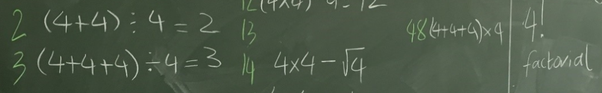

Extra#
Vier vieren#

Het vier vieren probleem is een puzzel. Het doel is om steeds de meest eenvoudige rekenkundige uitdrukking te vinden voor elk geheel getal tussen 0 en een bepaald maximum door alleen maar rekenkundige symbolen (denk aan \(+\) , \(-\), \(n^x\), \(\sqrt{}\), \(\times\), \(!\), \(\div\)) en vier keer het cijfer 4 te gebruiken. Bijvoorbeeld, in de uitdrukking
zie je een combinatie van vier vieren en de symbolen \(+\) en \(-\) die gelijk is aan 0.
from math import *
print("Nul is", 4 + 4 - 4 - 4)
Het vier-vierenprobleem! Voeg nu een aantal regels toe die lijken op die met nul om de waardes van
0tot en met20te berekenen met precies vier vieren. (Je kan ook een voldoende halen als je er een aantal overslaat waar je niet uitkomt!) Je mag alle rekenkundige bewerkingen van Python gebruiken:+optellen-aftrekken (of getal negatief maken)*vermenigvuldigen/delen( )haakjes om de volgorde van de berekening aan te passen**machtsverheffen
Resultaten met een decimale punt:
1.0,2.0, enz. zijn geen probleem!Je mag ook
44of4.4gebruiken, die ieder als twee vieren tellen,of
.4, die als één vier telt.of
sqrt, bijvoorbeeldsqrt(4)(of andere wortels)De waarde van
sqrt(4), de wortel van 4, is dat getal wat je met zichzelf moet vermenigvuldigen om 4 te krijgen.2*2 == 4, dussqrt(4) == 2. Een ander voorbeeld:sqrt(9) == 3, want3*3 == 9.
of
factorial, bijvoorbeeldfactorial(4)(of andere faculteiten)De waarde van
factorial(4), 4 faculteit (ook wel geschreven als 4!) is4*3*2*1, dus24. Net zo isfactorial(2)gelijk aan2*1, dus2, enfactorial(5)gelijk aan5*4*3*2*1, dus120.
sqrtenfactorialkomen allebei uit de modulemathvan Pythonterzijde, de regel
from math import *zorgt dat deze module beschikbaar is in de codeDit is hoe het resultaat, maar niet je broncode, eruit komt te zien.
Nul is 0 Een is 1 Twee is 2 Drie is 3 Vier is 4 Vijf is 5 Zes is 6 Zeven is 7 Acht is 8 Negen is 9 Tien is 10 Elf is 11 Twaalf is 12 Dertien is 13 Veertien is 14 Vijftien is 15 Zestien is 16 Zeventien is 17 Achttien is 18 Negentien is 19 Twintig is 20
Misschien vind je de vier-vierenpuzzle verslavend, frustrerend, of allebei!
Tip
Vergeet sqrt en factorial niet!
from math import *
print("Nul is", 4 + 4 - 4 - 4)
# jouw oplossing